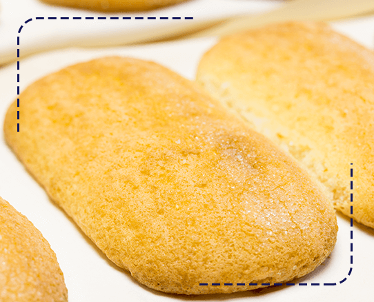
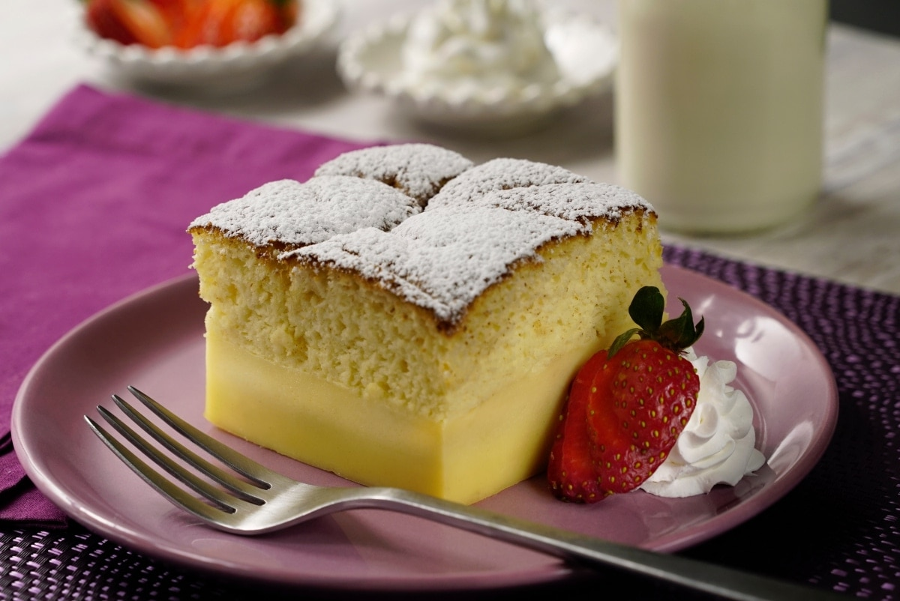
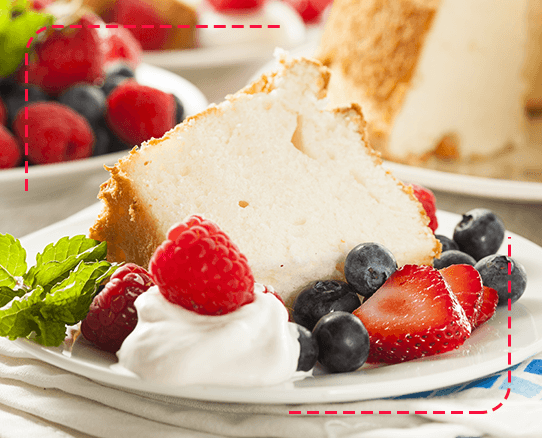
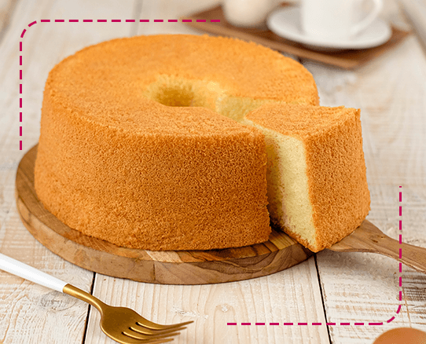

Este tipo de pastel se logra utilizando huevos enteros, separados o solo las claras, mezclados con azúcar y mantequilla. Se pueden elegir sabores como el chocolate o la vainilla y por último complementarlos con ingredientes secos como harina y otros polvos.
La base de este pastel tiene un costo de $100 por kilo
Por otro lado, están los pasteles de mantequilla, este tipo de pastel se elabora por medio del método cemage o acremado, el cual consiste en batir la mantequilla a temperatura ambiente junto con azúcar.
La base de este pastel tiene un costo de $90 por kilo
Los deliciosos pasteles de merengue se caracterizan por tener una estructura espumosa creada por el batido del huevo en conjunto con el aire, de esta forma se logra una masa extremadamente ligera y tierna, el vapor que se produce en el horno puede duplicar su volumen.
La base de este pastel tiene un costo de $115 por kilo
En este tipo de pasteles se usa aceite en lugar de mantequilla, el resultado es un producto húmedo y con una estructura suave, a diferencia de las recetas que usan mantequilla que suelen solidificarse. Para lograr una textura perfecta del pastel de aceite, debemos mantener su estado líquido fuera del horno. Los pasteles con aceite utilizan huevos batidos con el propósito de aligerar la textura, por lo que requieren de agentes leudantes químicos que la levanten.
La base de este pastel tiene un costo de $90 por kilo
Disfruta de nuestros ricos y muy variados sabores como lo son:
Cada uno de nuestros exquisitos sabores tiene un costo de $75 por kilo y si desea agregar mas de un sabor el sabor extra tendra un costo de $50